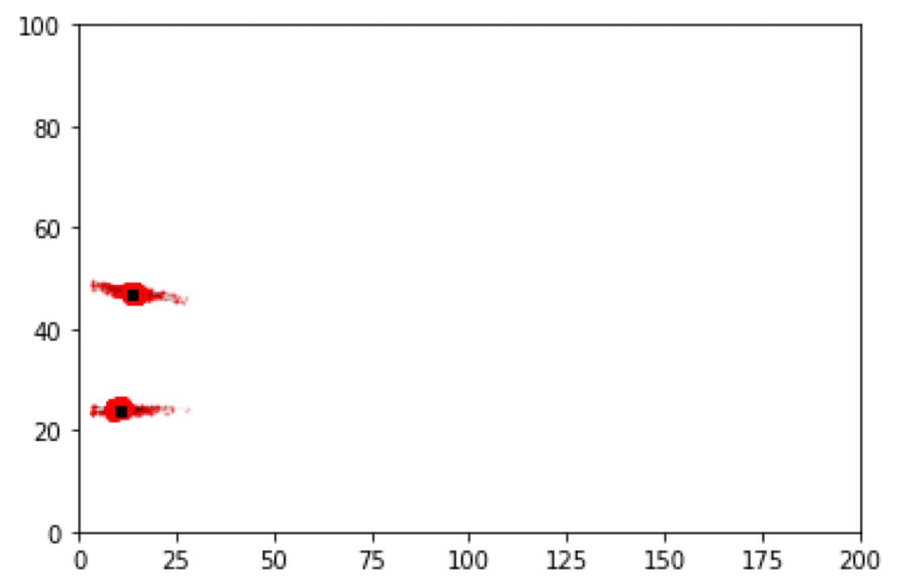

Calibration of Agent-Based Models. 11th July 2025, Cambridge.
Data Assimilation for Agent-Based Models
(With a sprinkling of ABC and LLMs)
Nick Malleson, University of Leeds, UK
Slides available at:
https://urban-analytics.github.io/dust/presentations.html

Outline
Dynamic re-calibration of a COVID-19 ABM using Approximate Bayesian Computation
Data assimilation for ABMs using Particle Filters and Kalman Filters
For desert: LLM-backed ABMs

Model synthesis
DyME: Dynamic Model for Epidemics
COVID transmission model with components including:
dynamic spatial microsimulation, spatial interaction model, data linkage (PSM), ...
Represents all individuals in a study area with activities: home, shopping, working, schooling
Daily timestep

DyME Drawbacks: Data and Latent Variables
Incredible detailed model!
BUT only data available for validation: COVID cases and hospital deaths
Only quantify a tiny part of the transmission dynamics
Huge uncertainties
Can we use dynamic calibration to:
Infer latent variables
Make better 'real-time' predictions
Dynamic Calibration for DyME
Use Approximate Bayesian Computation and Bayesian updating ('dynamic re-calibration')

Reduce uncertainty and produce more accurate future predictions
Parameter posteriors might reveal information about the model / system


Aside: Computational Efficiency
Uncertainty quantification, etc., requires many, many model runs
Difficult with computationally-expensive models, like ABMs
DyME (COVID microsimulation)
A single model run (800,000 individuals, 90 days) took 2 hours
ABC etc. would be impossible at that speed (need 1000s of runs)
Big computers can help
But maybe if I were better at programming ...
Re-implemented numpy/pandas model using (py)OpenCL
Run time went from 2 hours to a few seconds!
Transforms the potential uses of the model
Why we need Data Assimilation
Complex models will always diverge
(due to inherent uncertainties in inputs, parameter values, model structure, etc.)
Possible Solution: Data Assimilation
Used in meteorology and hydrology to bring models closer to reality. Combines:
Noisy, real-world observations
Model estimates of the system state
Data assimilation v.s. calibration

Challenges for using DA with ABMs
Model size
10,000 agents * 5 variables = 50,000 distinct parameters
Agent behaviour
Agent's have goals, needs, etc., so can't be arbitrarily adjusted
Assumptions and parameter types
Maths typically developed for continuous parameters and assume normal distributions
... but, at least, many of these problems are shared by climate models
Data assimilation with a Particle Filter

Crowd Simulation with a Particle Filter
Particle Filter Results
Box Environment: More particles = lower error
Exponential increase in complexity

More realistic simulations:
Grand Central Terminal (New York)
Pedestrian traces data
B. Zhou, X. Wang and X. Tang. (2012) Understanding Collective Crowd Behaviors: Learning a Mixture Model of Dynamic Pedestrian-Agents. In Proceedings of IEEE Conference on Computer Vision and Pattern Recognition (CVPR) 2012
http://www.ee.cuhk.edu.hk/~xgwang/grandcentral.html
Cleaned and prepared by Ternes et al. (2021).
Ensemble Kalman Filter (EnKF)
More complicated, and has stronger assuptions, but can update the model state (including categorical parameters) directly
\( \hat{X} = X + K \left( D - H X \right) \)
Current state estimate (\(X\)) updated with new information (\(\hat{X}\))
\(K\) (Kalman gain) balances importance of new data (\(D\)) v.s. current prediction.
\(H X\): prediction transformed into the same space as the observed data (e.g. arrregate observations and individual agents)
Challenges:
Designed for continuous data -- categorical parameters need converting (non trivial)
Unpredictable human behaviour
Problems with numeric scales (struggles with large and small numbers)
EnKF for Pedestrian Simulation

Case Study 2:
International Policy Diffusion
ABM simulates COVID-19 policy diffusion via peer mimicry
Particle filter enhances prediction accuracy with real-time data.
Frequent filtering improves results.
Y. Oswald, N. Malleson and K. Suchak (2024). An Agent-Based Model of the 2020 International Policy Diffusion in Response to the COVID-19 Pandemic with Particle Filter. Journal of Artificial Societies and Social Simulation 27(2) 3. DOI: 10.18564/jasss.5342
![Two subplots showing the progression of COVID-19 policy adoption across countries in March 2020. Panel (a) depicts the number of countries implementing school closures at four levels of stringency (level 0 to level 3) over time, with a rapid transition to level 3 (complete school closures) around mid-March. Panel (b) compares the adoption of various policies, including school closures, workplace closures, event cancellations, stay-at-home orders, domestic travel restrictions, and international travel restrictions, all measured by the number of countries. School closures exhibit the fastest and most widespread adoption, closely followed by event cancellations, with other policies showing slower adoption.](../figures/paper_figures/2023-Covid_Policy_Response/data_properties-vertical.png)
International Policy Diffusion
Global challenges hinge on international coordination of policy
COVID-19 lockdown: compelling example of almost unanimous global response
Aim: Develop a parsimonious ABM to explore mechanisms of international lockdown diffusion and improve prediction accuracy through data assimilation.
Methods
Agent-Based Model (ABM)
Agents: countries, with binary lockdown states ("lockdown" or "not in lockdown").
Behaviour: Peer mimicry based on similarity (income, democracy index, geography).
Secondary mechanism: Autonomous lockdown adoption based on internal thresholds (e.g., population density).
Calibration
Based on real-world lockdown data (March 2020) and parameters like social thresholds, peer group size, and adoption probabilities.
Data assimilation with a particle filter
Updates model predictions in real time using observed data (e.g., lockdown status of countries).
Improves model alignment with real-world dynamics by filtering poorly performing simulations.

Results
After calibration, base model performance is adequate, but exhibits large variance, especially during 'critical' phase (when most countries are going in to lockdown).
Macro performance better than macro performance
An accurate lockdown percentage doesn't mean the right countries are in lockdown
Particle filter narrows confidence intervals and reduces MSE by up to 75%; up to 40% in the critical phase
Performance during the critical few days is crucial if the model is going to be useful
Conclusions
International Policy Diffusion
Proof-of-concept: social / political A-B diffusion models can be combined with data assimilation.
Particle filter improves lockdown predictions, particularly in the 'critical phase'
But the model still incorrectly predicts many countries
Undoubtedly need a more nuanced model to improve predictions further (beyond peer mimicry).

Case Study 3
Wealth Diffusion with an EnKF
Significant wealth inequality in the U.S.
The top 1% hold ~35% of wealth, while the bottom 50% hold almost none.
(Near) real-time predictions are essential, particularly during crises
Paper explores the integration of ABMs with data assimilation to improve prediction accuracy.
Wealth Diffusion: Context
Methods (i)
Wealth Diffusion with an EnKF
Developed two agent-based models of U.S. wealth distribution:
Model 1:
Adapted from literature, focused on wealth accumulation through proportional allocation of growth.
Agents' wealth grows as a function of their initial wealth, reflecting the compounding effect of wealth.
Limited agent interaction; growth is largely independent of network effects.
Model 2:
Developed from scratch, includes network-based agent interactions and adaptive behaviours (more akin to a 'true' ABM)
Methods (ii)
Wealth Diffusion with an EnKF
Integrated the ABMs with an Ensemble Kalman Filter (EnKF):
EnKF adjusted agent-specific variables (e.g., wealth per agent) dynamically to match observed data.
Calibrated to U.S. wealth data (1990–2022) and tested them against real-time wealth estimates.
![Results of Experiment 1 Part A: illustrating the error of models 1 and 2 under Ensemble Kalman Filter (EnKF) optimisation with 100 ensemble members compared to the real data. The filter is applied every 20 time steps (months). Panels (A–D) depict the wealth share of the different economic groups (top 1%, top 10%–1%, middle 40%, bottom 50%) over time. Panels (A) and (B) present the archetypal behaviour of a single model run, illustrating how the EnKF influences the model behaviour. Panels (C) and (D) show the mean EnKF prediction and uncertainty across all ensemble members. Panel (E) depicts the Mean Absolute Error (MAE) from Eq. (7) of the two models, with and without the EnKF. It is clear that](../figures/paper_figures/2025-ABM_Wealth_Distribution/fig4.png)
Results
EnKF improved model accuracy significantly (20–50% error reduction).
Corrected disparities in predicted wealth shares for different economic groups (observe the jagged lines).
Filter still exhibited some unexpected behaviour
Conclusions
Wealth Diffusion with an EnKF
We show that a marco-economic ABM can be optimised with an EnKF
Improved short-term predictions, especially during a crisis
Essential during crises; models cannot include everything
Additional opportunity for improved understanding
E.g. through examining evolution of the Kalman Gain matrix and contrasting the observation v.s. model weights -- which become more or less certain over time?
For desert:
Foundation models and large-language models to drive agent behaviour
Foundation-model-backed ABMs
Modelling human behaviour in ABMs is (still!) an ongoing challenge
Behaviour typically implemented with bespoke rules, but even more advanced mathematical approaches are limited
Can new AI approaches offer a solution?
Large Language Models can respond to prompts in 'believable', 'human-like' ways
Geospatial Foundation Models capture nuanced, complex associations between spatial objects
Multi-modal Foundation Models operate with diverse data (text, video, audio, etc.)
Where might this lead...
"All models are great, until you need them"
It's fine to use models under normal conditions. Very useful.
Especially if the system undergoes a fundamental change (COVID? Global financial crash?) -- then we really need models to help
But then they become totally useless!
Foundation-model-backed ABMs
Maybe a model with LLM-backed agents would be better able to respond after a catastrophic system change

Large Language Models (LLMs)
Early evidence suggests that large-language models (LLMs) can be used to represent a wide range of human behaviours
Already a flurry of activity in LLM-backed ABMs
E.g. AutoGPT, BabyAGI, Generative Agents, MetaGP ... and others ...

LLMs & ABMs: Challenges
Lots of them!
Computational complexity: thousands/millions of LLMs?
Bias: LLMs very unlikely to be representative (non-English speakers, cultural bias, digital divide, etc.)
Validation: consistency (i.e. stochasticity), robustness (i.e. sensitivity to prompts), hallucinations, train/test contamination, and others
Main one for this talk: the need to interface through text
Communicating -- and maybe reasoning -- with language makes sense
But having to describe the world with text is a huge simplification / abstraction
A solution? Multi-modal and Geospatial Foundation Models
Foundation models: "a machine learning or deep learning model trained on vast datasets so that it can be applied across a wide range of use cases" (Wikipedia)
LLMs are Foundation models that work with text
Geospatial Foundation Models
FMs that work with spatial data (street view images, geotagged social media data, video, GPS trajectories, points-of-interest, etc.) to create rich, multidimensional spatial representations
Multi-modal Foundation Models
FMs that work with diverse data, e.g. text, audio, image, video, etc.
Towards Multi-Modal Foundation Models for ABMs (??)
GFMs and LLMs: a new generation of ABMs?
LLMs 'understand' human behaviour and can reason realistically
GFMs provide nuanced representation of 'space'
How?
I've no idea! Watch this space.
Insert spatial embeddings directly into the LLM?
Use an approach like BLIP-2 that trains a small transformer as an interface between an LLM and a vision-language model
Suggestions welcome!
Summary
ABC: dyncmic calibration and inferring latent parameters
Data assimilation for ABMs: Ensemble Kalman Filter worked best
LLMs and foundation models for ABMs!
Calibration of Agent-Based Models. 11th July 2025, Cambridge.
Data Assimilation for Agent-Based Models
(With a sprinkling of ABC and LLMs)
Nick Malleson, University of Leeds, UK
Slides available at:
https://urban-analytics.github.io/dust/presentations.html